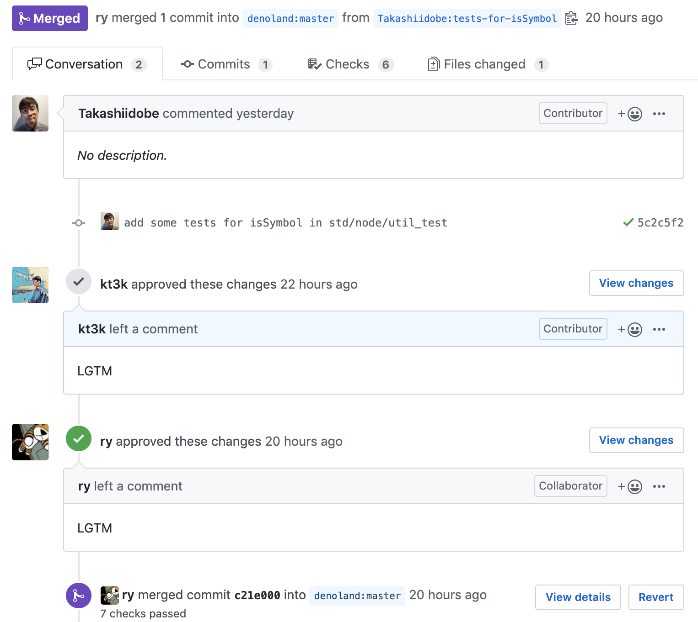
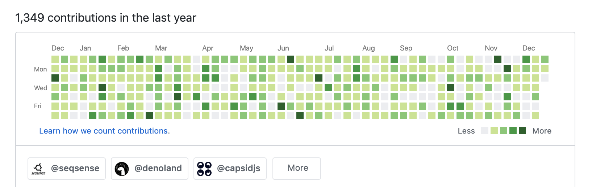
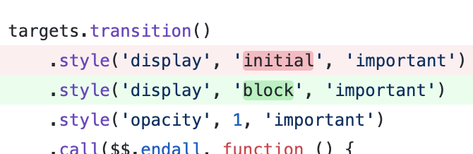
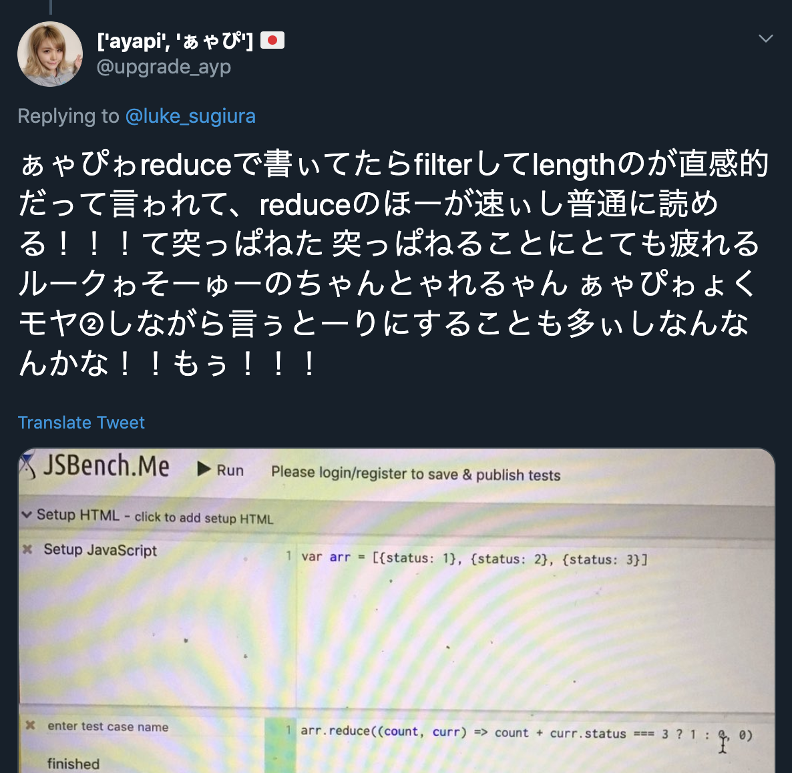
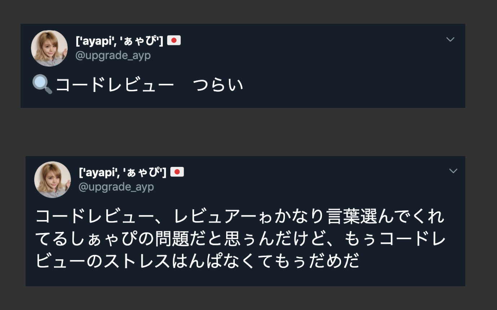
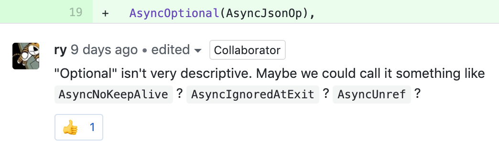
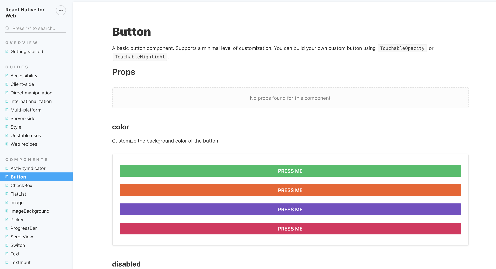

class: center, middle # レビューの話 日野澤 よしや twitter.com/kt3k --- class: center, middle レビューしてますか? --- class: center, middle ここ1週間でコードレビューした人 🙋♀️🙋♂️ --- class: center, middle ここ1週間で LGTM 以外のレビューをした人 🙋♀️🙋♂️ --- class: center, middle # LGTM --- class: center, middle # LGTM = Looks Good To Me. --- class: center, middle # LGTM = (It) Looks Good To Me. => それは良さそうに見えます. => 良さそうです. --- class: center, middle たまに見る LGTM 以外のレビューがつかないチーム  --- class: center, middle そのコード本当に「良さそう」に見えていますか? --- # 自己紹介 - 日野澤 歓也(ひのさわ よしや) - 2015 - 2019 RLS Air シリーズのフロントエンド開発/設計をしていました. <img src="./assets/hino-izu.jpg" width="250" align="left" />  --- # 自己紹介 - 得意な技術: Webpack, React, Gulp - この辺で困ったら slack で相談/質問してください <img src="./assets/hino-izu.jpg" width="250" align="left" /> --- class: middle, center ## レビューの第一歩 --- class: middle, center  これなんか変だな, と思ったとします --- class: middle, center 🤔「なんか変だけど, 良くわからん・・・」 --- class: middle, center # LGTM! 🙅♀️ --- class: middle, center なんらかの言語化をしましょう. --- class: middle, center 🤔「これなんか変だな」 --- class: middle, center ✍️「これなんか変です」 --- class: middle, center ✍️「これ, おかしいです」 --- class: middle, center ✍️「これ, ダメだと思います」 --- (たまに見る) ## 「何が」が書かれてないレビュー - 「おかしいとおもいます」 - 「ダメだと思います」 - 「これ, 違和感があります」 🙅♀️ 対応しようがないのでレビュイーはすごい困る. 必ず「何が」おかしいと思っているのかを言語化しましょう. --- class: middle 逆に, 主語がないレビューをされてしまった場合は<br /> 「何が」を聞き返しましょう. ✍️「これ, 違和感があります」<br/> ↓<br/> ✍️「もう少し詳しく説明してもらえますか?」 --- class: middle, center 🤔「これなんか変だな」 --- class: middle, center 🤔「これ `block` じゃなくて, `inherit` だ」 --- class: middle, center ✍️「`inherit` です」 --- class: middle, center ✍️「`inherit` です」 ## 惜しい! けど 🙅♀️ まだちょっとダメなレビュー --- class: middle, center ✍️「`inherit` です」 ↑これが指摘として正しいなら,<br/>良いレビューと言えば良いレビュー ただし, 指摘として間違ってたら「は?」てなって消耗 --- class: middle, center ✍️「`inherit` です」 完全に上から目線なレビュー. 相手もプロとしてコードを出してきているので,<br/>それを否定してしまうのはちょっと失礼. --- class: center # 答え ✍️「`inherit` ではないでしょうか?」<br /> ✍️「`inherit` かと思ったのですがどうでしょう?」 あくまで自分の意見を述べる形のレビュー (語尾はキャラクターによって調整してください) --- class: center ✍️「ぇ~! これって `inherit` じゃないのぉ?」<br /> ✍️「`inherit`?」<br /> ✍️「`inherit` じゃないんすかね?」<br /> 相手に, 反論の余地を残した言い方.<br />相手にも優しい, 自分にも優しい. <small>(自分は, 確信度が 100% でも<br />あえて質問形式でレビューする事が多いです.)</small> --- class: middle, center 良いレビューをしてきちんとマージできると,<br/>チームの信頼関係が築かれていきます. --- class: middle, center Happy Reviewing! --- class: middle, center # バグではないけど<br/>指摘したいケース --- # バグではない場合のレビュー - バグは必ず指摘するしかないとして - バグではないがベストな書き方ではない(ように見える)場合 --- # バグではない場合のレビュー - 可読性が高い書き方 - 関数名, 変数名が改善できる - パフォーマンスが高い書き方 - メンテナンス性が高い書き方 - 後の開発に有利になる書き方 このあたりは観点の違いで人によってゴールが違う場合がある --- # バグではない場合のレビュー - 観点の違いの問題は指摘が難しい - 指摘をしていく中で, 自分の思っていることが実は根拠が薄かったと気づいたりすることも - 必ずしも全部指摘が受け入れられるとは限らない --- # 可読性の例 - object の配列から obj.status === 3 であるものの数を数える ``` arr = [{ status: 1 }, { status: 3 }, { status: 5 }] const count = arr.reduce( (count, obj) => count + (obj.status === 3 ? 1 : 0), 0 ) ``` --- # 可読性の例 ``` const count = arr.reduce( (count, obj) => count + (obj.status === 3 ? 1 : 0), 0 ) ``` ↓こう書いた方が分かりやすい. ``` const count = arr.filter( obj => obj.status === 3 ).length ``` --- class: middle, center, inverse と思いがちですが --- <a href="https://twitter.com/upgrade_ayp/status/1214554182729924608" target="_blank"></a> <!-- ぁゃぴ晒してごめん! でも, とってもいい例題だったの --> --- class: middle ぁゃぴにとってはこれは「読みやすい」だった ``` const count = arr.reduce( (count, obj) => count + (obj.status === 3 ? 1 : 0), 0 ) ``` かつ, ぁゃぴはベンチマークをとって, パフォーマンスが良いという論点も主張した. でも, 受け入れてもらえなかった. --- class: middle, center  --- class: middle, center, inverse (注: この問題は解決済です) --- class: middle, center 「読みやすい」は人/チームによって変わりうる概念. チームメンバーが読みやすかったら,<br/>そのチームにとっては読みやすい. チームメンバーが悩んでしまうぐらいなら,<br /> ある程度そのチーム固有の選択をしても良いかも? --- # 名前に関する指摘の tips - 名前に関する指摘をしたい場合は, その名前がなぜ良くないと思うのかを説明する. - 「この名前の方が良い」だけだと, 納得してもらえない場合も --- # 名前に関する指摘の tips - 名前の例を挙げる場合は, 自分が better だと思う名前を2例以上挙げると良い - 相手にも選ぶ余地がある - これにしろと指示しているかのような雰囲気を無くせる --- class: middle, center 最近自分が複数例挙げてもらえた例.  https://github.com/denoland/deno/pull/3721 --- ## 観点の違いに関するレビューの tips - 観点の違いに関する指摘箇所が多すぎる場合は, そもそも自分の中でハードルを設けて例えば 5箇所以上は指摘しないみたいにしてしまっても良いかもしれません --- ## 観点の違いに関するレビューの tips - 指摘したいランキングを作って上位5位をピックアップして指摘するなど (自分は Air 時代はそうしていました.) - 上位5位を指摘してマージできると, 次は観点が少し揃うので, 次の5位を指摘できる. - だんだん指摘箇所が減っていって通常のレビューが出来るようになる. --- class: middle, center # レビューしないための技術 --- # レビューしないための技術 - 観点の違いに関するレビューは辛いのですが, そういう観点の違いの問題を減らすためのツールがたくさんあります - formatter - lint - storybook - CI --- # lint - eslint (js), rubocop (ruby), clippy (rust) etc, - ほぼ全部の言語でそれぞれの lint ツールがあります. - 使っていない変数/関数を指摘してくれたり, 細かい文法の揺れなどを指摘してくれます --- # formatter - prettier (js), yapf (python), etc - コードのスタイルを整えてくれるツール (インデントスペースとか) - 昔はこの辺のレビュー指摘はすごい多かった. - e.g. 「ここインデント ズレてますよ.」 - 最近はこの辺の指摘をすることがほぼなくなりました. --- # storybook - フロントエンド開発で, コンポーネント見本を並べて表示してくれるツール - レビュワーがチェックアウトして, 手元でビルドして, という手順を省けるようになるツール. - セットアップがかなり面倒ですが, レビューする手間がかなり減るので, おすすめです. --- # storybook <a href="https://necolas.github.io/react-native-web/docs/?path=/docs/components-button--color"></a> --- # CI - Continuous Integration = 継続的インテグレーション - サーバー上で lint / テストなどのチェックをすること - たとえば, lint チェックがダメだった場合に PR のコミットステータスを❌にしたり - レビュー指摘を機械にやらせる仕組み. --- class: middle, center, inverse # レビューの危機管理 --- # レビューの危機管理 - レビューは万能ではない - コメントが止まらないレビュー - 量が多すぎるレビュー - レビューの質を上げるだけではどうにもならない状況がある 20, 30コメント以上つくレビューの場合は,<br/>不毛な消耗戦になっている可能性が高い --- # レビューの危機管理 通常のレビューでどうにもならない場合に取り得る手段. - 対面レビューを設定する - 臨時のモブプロを設定する - (偉い人に言う) - (強い人に相談) --- # まとめ - 質問から始める. - 決めつけない. - 観点/視点の違いがありえるレビューは慎重に. - 常に1つだけの正解があるとは限らない. - 機械でレビューできることはなるべく機械にやらせましょう. - レビューでできる範囲には限界がある. - やばいと思った時はレビューの枠を超えた解決法を探す. --- class: middle, center ご清聴ありがとうございました. --- ## おまけ: Pull Request Template - GitHub の機能で Pull Request のテンプレートを設定する機能があります. - レポジトリの `.github/PULL_REQUEST_TEMPLATE.md` というパスに .md ファイルを置くとそれが, PR の説明エリアの初期状態になる. --- ## おまけ: Pull Request Template - 自分が好きな PR テンプレート - [tokio のテンプレート](https://github.com/tokio-rs/tokio/blob/master/.github/PULL_REQUEST_TEMPLATE.md) - サイバーエージェントの OSS でテンプレートの内容ですこし揉めていた[スレッド](https://github.com/cats-oss/use-intersection/pull/80) - 結局すごいシンプルに. <small>(ハマーさんの期待する答えではなかったかもしれませんが・・・)</small>